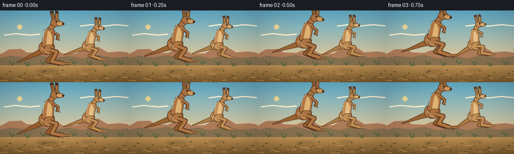
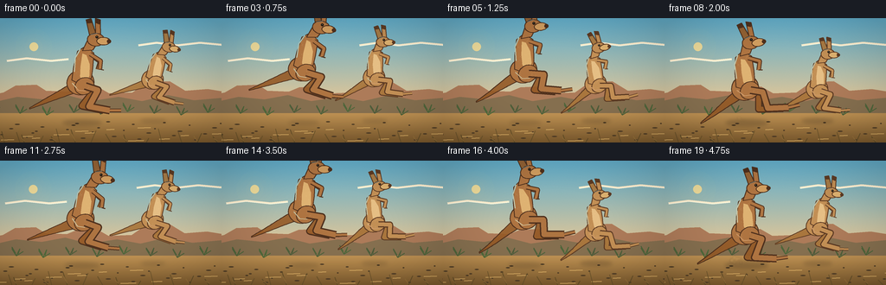
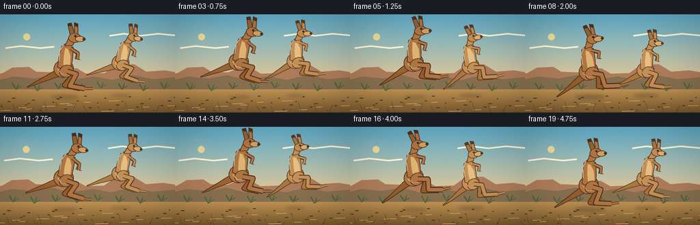

CODING AGENTS AS PIXEL WORLD MODELS
traex/GPT-5.6-Sol · instance_preservation_0008
点击播放 · 原生 RGB 像素
逐轮保存的候选
回放视频、检查图与代码变化。
每份候选均可单独播放。实际图片检查记录在下方工具轨迹中。
候选 01播放与检查图
点击播放 · 原生 RGB 像素


展开代码变化
--- 上一保存版本
+++ 本次保存版本
@@ -0,0 +1,272 @@
+from pathlib import Path
+import math
+import numpy as np
+from PIL import Image, ImageDraw, ImageFilter
+import artifact_io
+
+# PixelWorld: text-to-video drawn from mathematical geometry only.
+W, H, N, FPS = 256, 144, 20, 4.0
+S = 4
+rng = np.random.default_rng(808)
+
+
+def P(points):
+ return [(int(round(x*S)), int(round(y*S))) for x,y in points]
+
+def ellipse_poly(cx, cy, rx, ry, angle=0, n=42):
+ ca, sa = math.cos(angle), math.sin(angle)
+ out=[]
+ for k in range(n):
+ q=2*math.pi*k/n
+ x,y=rx*math.cos(q),ry*math.sin(q)
+ out.append((cx+x*ca-y*sa, cy+x*sa+y*ca))
+ return out
+
+def bezier(a,b,c,d,n=26):
+ out=[]
+ for t in np.linspace(0,1,n):
+ u=1-t
+ out.append((u**3*a[0]+3*u*u*t*b[0]+3*u*t*t*c[0]+t**3*d[0],
+ u**3*a[1]+3*u*u*t*b[1]+3*u*t*t*c[1]+t**3*d[1]))
+ return out
+
+def ribbon(center, widths):
+ left=[]; right=[]
+ for j,(x,y) in enumerate(center):
+ if j==0: dx,dy=center[1][0]-x,center[1][1]-y
+ elif j==len(center)-1: dx,dy=x-center[j-1][0],y-center[j-1][1]
+ else: dx,dy=center[j+1][0]-center[j-1][0],center[j+1][1]-center[j-1][1]
+ ll=max(1e-6,math.hypot(dx,dy)); nx,ny=-dy/ll,dx/ll
+ w=widths[j] if hasattr(widths,'__len__') else widths
+ left.append((x+nx*w,y+ny*w)); right.append((x-nx*w,y-ny*w))
+ return left+right[::-1]
+
+def lerp(a,b,t): return a+(b-a)*t
+
+def background(t):
+ # Soft Australian dawn sky with subtle film-grain texture.
+ yy=np.arange(H*S)[:,None]/(H*S-1)
+ top=np.array([99,173,201.],float); horizon=np.array([247,203,143.],float)
+ sky=np.zeros((H*S,W*S,3),np.float32)
+ blend=np.minimum(1, yy/0.76)**1.15
+ sky[:]=top[None,None,:]*(1-blend[:,:,None])+horizon[None,None,:]*blend[:,:,None]
+ noise=rng.normal(0,0.8,(H*S,W*S,1))
+ sky=np.clip(sky+noise,0,255).astype(np.uint8)
+ im=Image.fromarray(sky,'RGB'); d=ImageDraw.Draw(im)
+ # Sun and atmospheric glow.
+ sx,sy=39-0.20*t,33
+ glow=Image.new('RGBA',im.size,(0,0,0,0)); gd=ImageDraw.Draw(glow)
+ for r,a in [(21,4),(15,7),(10,12)]:
+ gd.ellipse(((sx-r)*S,(sy-r)*S,(sx+r)*S,(sy+r)*S),fill=(255,218,135,a))
+ gd.ellipse(((sx-5)*S,(sy-5)*S,(sx+5)*S,(sy+5)*S),fill=(255,225,148,215))
+ im=Image.alpha_composite(im.convert('RGBA'),glow)
+ d=ImageDraw.Draw(im)
+ # High, wispy clouds drifting slowly.
+ shift=-0.65*t
+ for cloud in [[(8,49),(31,46),(59,49),(79,47)],[(160,31),(181,28),(205,31),(231,28),(263,31)]]:
+ pts=[((x+shift)*S,y*S) for x,y in cloud]
+ d.line(pts,fill=(255,238,205,70),width=2*S)
+ d.line([(x,y+S) for x,y in pts],fill=(255,250,225,34),width=S)
+ # Distant mesas, moving very slowly for parallax.
+ sh=-0.30*t
+ back=[(-20,91),(4,86),(18,78),(42,77),(53,84),(78,85),(90,80),(112,79),(126,87),
+ (153,86),(170,74),(196,73),(214,84),(240,82),(277,88),(277,111),(-20,111)]
+ d.polygon(P([(x+sh,y) for x,y in back]),fill=(173,123,89,120))
+ ridge=[(-15,99),(20,91),(50,94),(77,89),(104,96),(137,91),(164,96),(194,89),(224,95),(270,91),(270,113),(-15,113)]
+ d.polygon(P([(x-0.65*t,y) for x,y in ridge]),fill=(133,111,79,145))
+ # Ground gradient.
+ gd=np.zeros((34*S,W*S,4),np.uint8)
+ for y in range(34*S):
+ a=y/(34*S-1); col=np.array([190,145,83])*(1-a)+np.array([125,91,46])*a
+ gd[y,:,0:3]=col.astype(np.uint8); gd[y,:,3]=255
+ im.alpha_composite(Image.fromarray(gd,'RGBA'),(0,110*S))
+ d=ImageDraw.Draw(im)
+ # Mid-ground shrubs and spinifex: positions loop past edges as camera tracks.
+ for j in range(23):
+ x0=(j*31+17-1.55*t)%310-25
+ base=108+(j*7)%5
+ col=(78,91+((j*5)%16),58,180)
+ d.line(P([(x0,base),(x0-5,base-8-(j%3)),(x0-1,base-3)]),fill=col,width=S)
+ d.line(P([(x0,base),(x0+4,base-9+(j%2)),(x0+2,base-2)]),fill=col,width=S)
+ d.line(P([(x0,base),(x0+8,base-5)]),fill=col,width=S)
+ # Pebbles and ground striations enhance lateral movement.
+ for j in range(35):
+ x=(j*47+11-2.5*t)%300-20; y=120+(j*13)%22
+ ww=1+(j%4)*0.65
+ d.ellipse(((x-ww)*S,(y-.55)*S,(x+ww)*S,(y+.55)*S),fill=(80,61,38,85))
+ for j in range(15):
+ x=(j*61-3.2*t)%330-35; y=126+(j*11)%17
+ d.line(P([(x,y),(x+9+(j%4)*3,y-.4)]),fill=(222,177,103,65),width=S)
+ return im
+
+
+def draw_shadow(im, x, y, scale, air, tint=(61,46,30)):
+ # Soft grounded ellipse, narrowing and fading at jump apex.
+ sh=Image.new('RGBA',im.size,(0,0,0,0)); sd=ImageDraw.Draw(sh)
+ rx=scale*(24-8*air); ry=scale*(3.5-1.2*air)
+ sd.ellipse(((x-rx)*S,(y-ry)*S,(x+rx)*S,(y+ry)*S),fill=(*tint,int(75-31*air)))
+ sh=sh.filter(ImageFilter.GaussianBlur(2.2*S))
+ im.alpha_composite(sh)
+
+
+def draw_dust(im, x, t, strength, direction=1, seedoff=0):
+ if strength <= .02: return
+ layer=Image.new('RGBA',im.size,(0,0,0,0)); d=ImageDraw.Draw(layer)
+ rr=np.random.default_rng(1000+seedoff)
+ for k in range(12):
+ age=min(1.0,strength*(.45+k/18))
+ px=x-direction*(3+k*1.6)*strength+rr.uniform(-2.5,2.5)
+ py=120-rr.uniform(0,1)*(2+7*strength)-k*.10
+ rad=(1.0+k*.20)*strength
+ d.ellipse(((px-rad)*S,(py-rad)*S,(px+rad)*S,(py+rad)*S),
+ fill=(218,171,103,int((30+20*(k%3))*strength)))
+ layer=layer.filter(ImageFilter.GaussianBlur(.8*S))
+ im.alpha_composite(layer)
+
+
+def kangaroo(im, x, hip_y, scale, phase, palette, flip=False, identity=0):
+ """Draw one anatomically recognizable, articulated kangaroo in side profile."""
+ # phase 0..1 from push-off through apex to landing
+ air=max(0,math.sin(math.pi*phase))
+ tilt=math.radians(-7 + 11*math.sin(2*math.pi*(phase-.08)))
+ facing=-1 if flip else 1
+ ca,sa=math.cos(tilt),math.sin(tilt)
+ def xf(pt):
+ xx,yy=pt[0]*facing,pt[1]
+ return (x+scale*(xx*ca-yy*sa), hip_y+scale*(xx*sa+yy*ca))
+ def shape(draw, pts, fill, outline=None, width=1):
+ q=P([xf(z) for z in pts]); draw.polygon(q,fill=fill)
+ if outline: draw.line(q+[q[0]],fill=outline,width=max(S,int(width*scale*S)),joint='curve')
+ def ep(draw,cx,cy,rx,ry,ang,fill,outline=None,width=1):
+ shape(draw,ellipse_poly(cx,cy,rx,ry,ang,36),fill,outline,width)
+ layer=Image.new('RGBA',im.size,(0,0,0,0)); d=ImageDraw.Draw(layer)
+ fur, dark, light, cream = palette
+ far=tuple(max(0,c-25) for c in fur[:3])+(235,)
+ edge=dark
+ # tail, heavy at the rump and tapering nearly to the ground
+ wave=2.1*math.sin(2*math.pi*phase)
+ cent=bezier((0,2),(-17,7+wave),(-37,17-wave*.3),(-57,24+wave*.35),28)
+ shape(d,ribbon(cent,np.linspace(6.4,0.45,len(cent))),far,edge,1.0)
+ # Far hind leg, darker, always visible separately.
+ tuck=math.sin(math.pi*phase)
+ knee=(10+7*tuck,10-1*tuck)
+ ankle=(-2+11*(phase-.2)+4*tuck,27-5*tuck)
+ foot=(20+13*phase,33-5*tuck)
+ pts=[xf((1,1)),xf(knee),xf(ankle),xf(foot)]
+ d.line(P(pts),fill=edge,width=max(S,int(8.0*scale*S)),joint='curve')
+ d.line(P(pts),fill=far,width=max(S,int(5.4*scale*S)),joint='curve')
+ # Long far foot/toes
+ d.line(P([xf(foot),xf((foot[0]+10,foot[1]+.7))]),fill=edge,width=max(S,int(3.8*scale*S)))
+ d.line(P([xf(foot),xf((foot[0]+10,foot[1]+.7))]),fill=far,width=max(S,int(2.3*scale*S)))
+ # Far forearm.
+ handwave=1.2*math.sin(2*math.pi*phase)
+ armfar=[xf((11,-29)),xf((21,-22+handwave)),xf((18,-14+handwave))]
+ d.line(P(armfar),fill=edge,width=max(S,int(4.2*scale*S)),joint='curve')
+ d.line(P(armfar),fill=far,width=max(S,int(2.4*scale*S)),joint='curve')
+ # Main haunch and rising tapered torso.
+ ep(d,-1,0,14.5,13.3,math.radians(-8),fur,edge,1.15)
+ torso=[(-10,-3),(-7,-18),(-2,-34),(7,-39),(15,-31),(13,-15),(11,-5),(6,6)]
+ shape(d,torso,fur,edge,1.15)
+ # Warm belly patch.
+ belly=[(5,2),(9,-7),(10,-19),(7,-29),(3,-31),(0,-17),(-1,-6)]
+ shape(d,belly,cream,None)
+ # Near hind leg: muscular thigh, narrow shin and enormous foot.
+ ep(d,3,4,10.5,9,math.radians(-22),fur,edge,1.0)
+ knee2=(15+5*tuck,10-2*tuck)
+ # legs swing forward to prepare landing, tucked most at apex
+ ankle2=(4+13*phase+2*tuck,29-7*tuck)
+ foot2=(27+12*phase,34-6*tuck)
+ leg=[xf((4,4)),xf(knee2),xf(ankle2),xf(foot2)]
+ d.line(P(leg),fill=edge,width=max(S,int(8.6*scale*S)),joint='curve')
+ d.line(P(leg),fill=fur,width=max(S,int(5.8*scale*S)),joint='curve')
+ toe_end=(foot2[0]+12,foot2[1]+.5)
+ d.line(P([xf(foot2),xf(toe_end)]),fill=edge,width=max(S,int(4.3*scale*S)))
+ d.line(P([xf(foot2),xf(toe_end)]),fill=fur,width=max(S,int(2.7*scale*S)))
+ # Long neck and compact head.
+ neck=[(3,-34),(9,-45),(16,-50),(22,-45),(14,-34)]
+ shape(d,neck,fur,edge,1.0)
+ # ears behind and front; dark tips make silhouette very legible
+ ear1=[(12,-48),(9,-67),(14,-68),(19,-49)]
+ ear2=[(18,-48),(19,-68),(24,-66),(23,-47)]
+ shape(d,ear1,far,edge,1.0); shape(d,ear2,fur,edge,1.0)
+ shape(d,[(10,-63),(9,-67),(14,-68),(15,-63)],dark,None)
+ shape(d,[(19,-63),(19,-68),(24,-66),(23,-61)],dark,None)
+ # head, muzzle, nose
+ ep(d,18,-45,9.0,7.0,math.radians(5),fur,edge,1.0)
+ muzzle=ellipse_poly(26,-43,7.0,4.2,math.radians(5),28)
+ shape(d,muzzle,light,edge,.8)
+ ep(d,32,-42.4,2.25,2.15,0,dark,None)
+ # eye with tiny catchlight, and facial brow stripe
+ ex,ey=xf((19.4,-47.7)); rr=max(1.15,1.45*scale)*S
+ d.ellipse((ex*S-rr,ey*S-rr,ex*S+rr,ey*S+rr),fill=(35,27,19,255))
+ cr=.47*S; d.ellipse((ex*S-.35*S,ey*S-.65*S,ex*S-.35*S+cr,ey*S-.65*S+cr),fill=(255,238,194,245))
+ d.line(P([xf((13,-51)),xf((20,-52))]),fill=(89,55,34,150),width=max(S,int(scale*S)))
+ # Near forearms and little black fingertips.
+ elbow=(22,-23+handwave); paw=(19+2*math.sin(2*math.pi*phase),-14+handwave)
+ arm=[xf((11,-30)),xf(elbow),xf(paw)]
+ d.line(P(arm),fill=edge,width=max(S,int(5.0*scale*S)),joint='curve')
+ d.line(P(arm),fill=fur,width=max(S,int(3.1*scale*S)),joint='curve')
+ d.line(P([xf(paw),xf((paw[0]+4,paw[1]+1))]),fill=dark,width=max(S,int(1.2*scale*S)))
+ # Small individualizing shoulder mark / rim highlights (natural fur, no accessories).
+ d.line(P([xf((-7,-12)),xf((-5,-27)),xf((1,-36))]),fill=(255,220,160,85),width=max(S,int(1.25*scale*S)))
+ d.line(P([xf((-10,0)),xf((-4,8)),xf((4,9))]),fill=(244,190,122,70),width=max(S,int(1.0*scale*S)))
+ # Faint fur stipple restricted to silhouette alpha.
+ mask=layer.getchannel('A')
+ tex=Image.new('RGBA',im.size,(0,0,0,0)); td=ImageDraw.Draw(tex)
+ rrng=np.random.default_rng(220+identity)
+ for k in range(90):
+ lx=rrng.uniform(-10,17); ly=rrng.uniform(-38,10)
+ px,py=xf((lx,ly)); rad=rrng.uniform(.18,.5)*S
+ td.ellipse((px*S-rad,py*S-rad,px*S+rad,py*S+rad),fill=(255,225,170,25))
+ tex.putalpha(Image.composite(tex.getchannel('A'),Image.new('L',im.size,0),mask))
+ layer=Image.alpha_composite(layer,tex)
+ im.alpha_composite(layer)
+
+
+def make_frame(i):
+ t=i/FPS
+ im=background(t)
+ # Two stable identities: larger russet-sand adult foreground and lighter juvenile behind/right.
+ p1=((i+1.35)%10)/10.0
+ p2=((i+3.0)%10)/10.0
+ a1=max(0,math.sin(math.pi*p1)); a2=max(0,math.sin(math.pi*p2))
+ # dust peaks shortly after/to either side of contact
+ contact1=max(0,1-a1*3.0); contact2=max(0,1-a2*3.0)
+ draw_dust(im,93,i,contact1,1,20+i%10)
+ draw_dust(im,177,i,contact2,1,50+i%10)
+ draw_shadow(im,95,121,1.08,a1)
+ draw_shadow(im,177,119,.87,a2)
+ # Back kangaroo first. Bases keep feet around the same desert plane at contact.
+ pal2=((194,143,85,255),(92,58,35,255),(221,177,112,255),(229,190,132,255))
+ pal1=((174,116,65,255),(78,48,29,255),(209,158,96,255),(222,178,114,255))
+ draw_y2=88-21*a2
+ kangaroo(im,177,draw_y2,.86,p2,pal2,False,2)
+ draw_y1=86-28*a1
+ kangaroo(im,94,draw_y1,1.08,p1,pal1,False,1)
+ # Foreground grasses partly occlude feet, integrating subjects in environment.
+ fg=Image.new('RGBA',im.size,(0,0,0,0)); d=ImageDraw.Draw(fg)
+ for j in range(18):
+ xx=(j*41+7-3.4*t)%305-25; base=144
+ h=5+(j*7)%12; lean=(-1 if j%3 else 1)*(3+j%4)
+ col=(94,75,38,155 if j%2 else 205)
+ d.line(P([(xx,base),(xx+lean,base-h)]),fill=col,width=max(S,int(1.2*S)))
+ if j%2==0:
+ d.line(P([(xx,base-2),(xx-4,base-h*.65)]),fill=(157,119,61,125),width=S)
+ im.alpha_composite(fg)
+ # gentle cinematic vignette
+ arr=np.asarray(im.convert('RGB')).astype(np.float32)
+ yh,xh=np.mgrid[0:H*S,0:W*S]
+ nx=(xh-W*S/2)/(W*S/2); ny=(yh-H*S/2)/(H*S/2)
+ vign=np.clip(1-.10*np.maximum(0,nx*nx+ny*ny-.3),.85,1)[...,None]
+ arr=np.clip(arr*vign,0,255).astype(np.uint8)
+ out=Image.fromarray(arr).resize((W,H),Image.Resampling.LANCZOS)
+ return np.asarray(out,dtype=np.uint8)
+
+
+def main():
+ frames=np.stack([make_frame(i) for i in range(N)])
+ artifact_io.save(frames,Path(__file__).resolve().parent)
+ print('saved',frames.shape,frames.dtype)
+
+if __name__=='__main__':
+ main()
候选 02播放与检查图
点击播放 · 原生 RGB 像素

展开代码变化
--- 上一保存版本
+++ 本次保存版本
@@ -234,15 +234,17 @@
contact1=max(0,1-a1*3.0); contact2=max(0,1-a2*3.0)
draw_dust(im,93,i,contact1,1,20+i%10)
draw_dust(im,177,i,contact2,1,50+i%10)
- draw_shadow(im,95,121,1.08,a1)
+ draw_shadow(im,95,121,.98,a1)
draw_shadow(im,177,119,.87,a2)
# Back kangaroo first. Bases keep feet around the same desert plane at contact.
pal2=((194,143,85,255),(92,58,35,255),(221,177,112,255),(229,190,132,255))
pal1=((174,116,65,255),(78,48,29,255),(209,158,96,255),(222,178,114,255))
draw_y2=88-21*a2
kangaroo(im,177,draw_y2,.86,p2,pal2,False,2)
- draw_y1=86-28*a1
- kangaroo(im,94,draw_y1,1.08,p1,pal1,False,1)
+ # Keep the entire silhouette in frame even at the apex while retaining a
+ # visibly distinct larger foreground identity.
+ draw_y1=87-18*a1
+ kangaroo(im,94,draw_y1,.98,p1,pal1,False,1)
# Foreground grasses partly occlude feet, integrating subjects in environment.
fg=Image.new('RGBA',im.size,(0,0,0,0)); d=ImageDraw.Draw(fg)
for j in range(18):
候选 03播放与检查图

可观测工具轨迹
实际执行的命令与返回图片。
命令 1exit 0
/bin/bash -lc "cat prompt.txt && printf '\\n---RULES---\\n' && cat GENERATION_RULES.md && printf '\\n---SPEC---\\n' && cat task_spec.json"
命令 2exit 1
/bin/bash -lc "find . -maxdepth 2 -type f -printf '%p\\n' | sort | head -200 && printf '\\nTOOLS\\n' && command -v ffmpeg && command -v python3"
命令 3exit 0
/bin/bash -lc "cat artifact_io.py; python3 - <<'PY' import importlib.util for x in ['PIL','numpy','cv2','imageio']: print(x, bool(importlib.util.find_spec(x))) PY"
命令 4exit 0
/bin/bash -lc "cat > generate.py <<'PY'
from pathlib import Path
import math
import numpy as np
from PIL import Image, ImageDraw, ImageFilter
import artifact_io
# PixelWorld: text-to-video drawn from mathematical geometry only.
W, H, N, FPS = 256, 144, 20, 4.0
S = 4
rng = np.random.default_rng(808)
def P(points):
return [(int(round(x*S)), int(round(y*S))) for x,y in points]
def ellipse_poly(cx, cy, rx, ry, angle=0, n=42):
ca, sa = math.cos(angle), math.sin(angle)
out=[]
for k in range(n):
q=2*math.pi*k/n
x,y=rx*math.cos(q),ry*math.sin(q)
out.append((cx+x*ca-y*sa, cy+x*sa+y*ca))
return out
def bezier(a,b,c,d,n=26):
out=[]
for t in np.linspace(0,1,n):
u=1-t
out.append((u**3*a[0]+3*u*u*t*b[0]+3*u*t*t*c[0]+t**3*d[0],
u**3*a[1]+3*u*u*t*b[1]+3*u*t*t*c[1]+t**3*d[1]))
return out
def ribbon(center, widths):
left=[]; right=[]
for j,(x,y) in enumerate(center):
if j==0: dx,dy=center[1][0]-x,center[1][1]-y
elif j==len(center)-1: dx,dy=x-center[j-1][0],y-center[j-1][1]
else: dx,dy=center[j+1][0]-center[j-1][0],center[j+1][1]-center[j-1][1]
ll=max(1e-6,math.hypot(dx,dy)); nx,ny=-dy/ll,dx/ll
w=widths[j] if hasattr(widths,'__len__') else widths
left.append((x+nx*w,y+ny*w)); right.append((x-nx*w,y-ny*w))
return left+right[::-1]
def lerp(a,b,t): return a+(b-a)*t
def background(t):
# Soft Australian dawn sky with subtle film-grain texture.
yy=np.arange(H*S)[:,None]/(H*S-1)
top=np.array([99,173,201.],float); horizon=np.array([247,203,143.],float)
sky=np.zeros((H*S,W*S,3),np.float32)
blend=np.minimum(1, yy/0.76)**1.15
sky[:]=top[None,None,:]*(1-blend[:,:,None])+horizon[None,None,:]*blend[:,:,None]
noise=rng.normal(0,0.8,(H*S,W*S,1))
sky=np.clip(sky+noise,0,255).astype(np.uint8)
im=Image.fromarray(sky,'RGB'); d=ImageDraw.Draw(im)
# Sun and atmospheric glow.
sx,sy=39-0.20*t,33
glow=Image.new('RGBA',im.size,(0,0,0,0)); gd=ImageDraw.Draw(glow)
for r,a in [(21,4),(15,7),(10,12)]:
gd.ellipse(((sx-r)*S,(sy-r)*S,(sx+r)*S,(sy+r)*S),fill=(255,218,135,a))
gd.ellipse(((sx-5)*S,(sy-5)*S,(sx+5)*S,(sy+5)*S),fill=(255,225,148,215))
im=Image.alpha_composite(im.convert('RGBA'),glow)
d=ImageDraw.Draw(im)
# High, wispy clouds drifting slowly.
shift=-0.65*t
for cloud in [[(8,49),(31,46),(59,49),(79,47)],[(160,31),(181,28),(205,31),(231,28),(263,31)]]:
pts=[((x+shift)*S,y*S) for x,y in cloud]
d.line(pts,fill=(255,238,205,70),width=2*S)
d.line([(x,y+S) for x,y in pts],fill=(255,250,225,34),width=S)
# Distant mesas, moving very slowly for parallax.
sh=-0.30*t
back=[(-20,91),(4,86),(18,78),(42,77),(53,84),(78,85),(90,80),(112,79),(126,87),
(153,86),(170,74),(196,73),(214,84),(240,82),(277,88),(277,111),(-20,111)]
d.polygon(P([(x+sh,y) for x,y in back]),fill=(173,123,89,120))
ridge=[(-15,99),(20,91),(50,94),(77,89),(104,96),(137,91),(164,96),(194,89),(224,95),(270,91),(270,113),(-15,113)]
d.polygon(P([(x-0.65*t,y) for x,y in ridge]),fill=(133,111,79,145))
# Ground gradient.
gd=np.zeros((34*S,W*S,4),np.uint8)
for y in range(34*S):
a=y/(34*S-1); col=np.array([190,145,83])*(1-a)+np.array([125,91,46])*a
gd[y,:,0:3]=col.astype(np.uint8); gd[y,:,3]=255
im.alpha_composite(Image.fromarray(gd,'RGBA'),(0,110*S))
d=ImageDraw.Draw(im)
# Mid-ground shrubs and spinifex: positions loop past edges as camera tracks.
for j in range(23):
x0=(j*31+17-1.55*t)%310-25
base=108+(j*7)%5
col=(78,91+((j*5)%16),58,180)
d.line(P([(x0,base),(x0-5,base-8-(j%3)),(x0-1,base-3)]),fill=col,width=S)
d.line(P([(x0,base),(x0+4,base-9+(j%2)),(x0+2,base-2)]),fill=col,width=S)
d.line(P([(x0,base),(x0+8,base-5)]),fill=col,width=S)
# Pebbles and ground striations enhance lateral movement.
for j in range(35):
x=(j*47+11-2.5*t)%300-20; y=120+(j*13)%22
ww=1+(j%4)*0.65
d.ellipse(((x-ww)*S,(y-.55)*S,(x+ww)*S,(y+.55)*S),fill=(80,61,38,85))
for j in range(15):
x=(j*61-3.2*t)%330-35; y=126+(j*11)%17
d.line(P([(x,y),(x+9+(j%4)*3,y-.4)]),fill=(222,177,103,65),width=S)
return im
def draw_shadow(im, x, y, scale, air, tint=(61,46,30)):
# Soft grounded ellipse, narrowing and fading at jump apex.
sh=Image.new('RGBA',im.size,(0,0,0,0)); sd=ImageDraw.Draw(sh)
rx=scale*(24-8*air); ry=scale*(3.5-1.2*air)
sd.ellipse(((x-rx)*S,(y-ry)*S,(x+rx)*S,(y+ry)*S),fill=(*tint,int(75-31*air)))
sh=sh.filter(ImageFilter.GaussianBlur(2.2*S))
im.alpha_composite(sh)
def draw_dust(im, x, t, strength, direction=1, seedoff=0):
if strength <= .02: return
layer=Image.new('RGBA',im.size,(0,0,0,0)); d=ImageDraw.Draw(layer)
rr=np.random.default_rng(1000+seedoff)
for k in range(12):
age=min(1.0,strength*(.45+k/18))
px=x-direction*(3+k*1.6)*strength+rr.uniform(-2.5,2.5)
py=120-rr.uniform(0,1)*(2+7*strength)-k*.10
rad=(1.0+k*.20)*strength
d.ellipse(((px-rad)*S,(py-rad)*S,(px+rad)*S,(py+rad)*S),
fill=(218,171,103,int((30+20*(k%3))*strength)))
layer=layer.filter(ImageFilter.GaussianBlur(.8*S))
im.alpha_composite(layer)
def kangaroo(im, x, hip_y, scale, phase, palette, flip=False, identity=0):
\"\"\"Draw one anatomically recognizable, articulated kangaroo in side profile.\"\"\"
# phase 0..1 from push-off through apex to landing
air=max(0,math.sin(math.pi*phase))
tilt=math.radians(-7 + 11*math.sin(2*math.pi*(phase-.08)))
facing=-1 if flip else 1
ca,sa=math.cos(tilt),math.sin(tilt)
def xf(pt):
xx,yy=pt[0]*facing,pt[1]
return (x+scale*(xx*ca-yy*sa), hip_y+scale*(xx*sa+yy*ca))
def shape(draw, pts, fill, outline=None, width=1):
q=P([xf(z) for z in pts]); draw.polygon(q,fill=fill)
if outline: draw.line(q+[q[0]],fill=outline,width=max(S,int(width*scale*S)),joint='curve')
def ep(draw,cx,cy,rx,ry,ang,fill,outline=None,width=1):
shape(draw,ellipse_poly(cx,cy,rx,ry,ang,36),fill,outline,width)
layer=Image.new('RGBA',im.size,(0,0,0,0)); d=ImageDraw.Draw(layer)
fur, dark, light, cream = palette
far=tuple(max(0,c-25) for c in fur[:3])+(235,)
edge=dark
# tail, heavy at the rump and tapering nearly to the ground
wave=2.1*math.sin(2*math.pi*phase)
cent=bezier((0,2),(-17,7+wave),(-37,17-wave*.3),(-57,24+wave*.35),28)
shape(d,ribbon(cent,np.linspace(6.4,0.45,len(cent))),far,edge,1.0)
# Far hind leg, darker, always visible separately.
tuck=math.sin(math.pi*phase)
knee=(10+7*tuck,10-1*tuck)
ankle=(-2+11*(phase-.2)+4*tuck,27-5*tuck)
foot=(20+13*phase,33-5*tuck)
pts=[xf((1,1)),xf(knee),xf(ankle),xf(foot)]
d.line(P(pts),fill=edge,width=max(S,int(8.0*scale*S)),joint='curve')
d.line(P(pts),fill=far,width=max(S,int(5.4*scale*S)),joint='curve')
# Long far foot/toes
d.line(P([xf(foot),xf((foot[0]+10,foot[1]+.7))]),fill=edge,width=max(S,int(3.8*scale*S)))
d.line(P([xf(foot),xf((foot[0]+10,foot[1]+.7))]),fill=far,width=max(S,int(2.3*scale*S)))
# Far forearm.
handwave=1.2*math.sin(2*math.pi*phase)
armfar=[xf((11,-29)),xf((21,-22+handwave)),xf((18,-14+handwave))]
d.line(P(armfar),fill=edge,width=max(S,int(4.2*scale*S)),joint='curve')
d.line(P(armfar),fill=far,width=max(S,int(2.4*scale*S)),joint='curve')
# Main haunch and rising tapered torso.
ep(d,-1,0,14.5,13.3,math.radians(-8),fur,edge,1.15)
torso=[(-10,-3),(-7,-18),(-2,-34),(7,-39),(15,-31),(13,-15),(11,-5),(6,6)]
shape(d,torso,fur,edge,1.15)
# Warm belly patch.
belly=[(5,2),(9,-7),(10,-19),(7,-29),(3,-31),(0,-17),(-1,-6)]
shape(d,belly,cream,None)
# Near hind leg: muscular thigh, narrow shin and enormous foot.
ep(d,3,4,10.5,9,math.radians(-22),fur,edge,1.0)
knee2=(15+5*tuck,10-2*tuck)
# legs swing forward to prepare landing, tucked most at apex
ankle2=(4+13*phase+2*tuck,29-7*tuck)
foot2=(27+12*phase,34-6*tuck)
leg=[xf((4,4)),xf(knee2),xf(ankle2),xf(foot2)]
d.line(P(leg),fill=edge,width=max(S,int(8.6*scale*S)),joint='curve')
d.line(P(leg),fill=fur,width=max(S,int(5.8*scale*S)),joint='curve')
toe_end=(foot2[0]+12,foot2[1]+.5)
d.line(P([xf(foot2),xf(toe_end)]),fill=edge,width=max(S,int(4.3*scale*S)))
d.line(P([xf(foot2),xf(toe_end)]),fill=fur,width=max(S,int(2.7*scale*S)))
# Long neck and compact head.
neck=[(3,-34),(9,-45),(16,-50),(22,-45),(14,-34)]
shape(d,neck,fur,edge,1.0)
# ears behind and front; dark tips make silhouette very legible
ear1=[(12,-48),(9,-67),(14,-68),(19,-49)]
ear2=[(18,-48),(19,-68),(24,-66),(23,-47)]
shape(d,ear1,far,edge,1.0); shape(d,ear2,fur,edge,1.0)
shape(d,[(10,-63),(9,-67),(14,-68),(15,-63)],dark,None)
shape(d,[(19,-63),(19,-68),(24,-66),(23,-61)],dark,None)
# head, muzzle, nose
ep(d,18,-45,9.0,7.0,math.radians(5),fur,edge,1.0)
muzzle=ellipse_poly(26,-43,7.0,4.2,math.radians(5),28)
shape(d,muzzle,light,edge,.8)
ep(d,32,-42.4,2.25,2.15,0,dark,None)
# eye with tiny catchlight, and facial brow stripe
ex,ey=xf((19.4,-47.7)); rr=max(1.15,1.45*scale)*S
d.ellipse((ex*S-rr,ey*S-rr,ex*S+rr,ey*S+rr),fill=(35,27,19,255))
cr=.47*S; d.ellipse((ex*S-.35*S,ey*S-.65*S,ex*S-.35*S+cr,ey*S-.65*S+cr),fill=(255,238,194,245))
d.line(P([xf((13,-51)),xf((20,-52))]),fill=(89,55,34,150),width=max(S,int(scale*S)))
# Near forearms and little black fingertips.
elbow=(22,-23+handwave); paw=(19+2*math.sin(2*math.pi*phase),-14+handwave)
arm=[xf((11,-30)),xf(elbow),xf(paw)]
d.line(P(arm),fill=edge,width=max(S,int(5.0*scale*S)),joint='curve')
d.line(P(arm),fill=fur,width=max(S,int(3.1*scale*S)),joint='curve')
d.line(P([xf(paw),xf((paw[0]+4,paw[1]+1))]),fill=dark,width=max(S,int(1.2*scale*S)))
# Small individualizing shoulder mark / rim highlights (natural fur, no accessories).
d.line(P([xf((-7,-12)),xf((-5,-27)),xf((1,-36))]),fill=(255,220,160,85),width=max(S,int(1.25*scale*S)))
d.line(P([xf((-10,0)),xf((-4,8)),xf((4,9))]),fill=(244,190,122,70),width=max(S,int(1.0*scale*S)))
# Faint fur stipple restricted to silhouette alpha.
mask=layer.getchannel('A')
tex=Image.new('RGBA',im.size,(0,0,0,0)); td=ImageDraw.Draw(tex)
rrng=np.random.default_rng(220+identity)
for k in range(90):
lx=rrng.uniform(-10,17); ly=rrng.uniform(-38,10)
px,py=xf((lx,ly)); rad=rrng.uniform(.18,.5)*S
td.ellipse((px*S-rad,py*S-rad,px*S+rad,py*S+rad),fill=(255,225,170,25))
tex.putalpha(Image.composite(tex.getchannel('A'),Image.new('L',im.size,0),mask))
layer=Image.alpha_composite(layer,tex)
im.alpha_composite(layer)
def make_frame(i):
t=i/FPS
im=background(t)
# Two stable identities: larger russet-sand adult foreground and lighter juvenile behind/right.
p1=((i+1.35)%10)/10.0
p2=((i+3.0)%10)/10.0
a1=max(0,math.sin(math.pi*p1)); a2=max(0,math.sin(math.pi*p2))
# dust peaks shortly after/to either side of contact
contact1=max(0,1-a1*3.0); contact2=max(0,1-a2*3.0)
draw_dust(im,93,i,contact1,1,20+i%10)
draw_dust(im,177,i,contact2,1,50+i%10)
draw_shadow(im,95,121,1.08,a1)
draw_shadow(im,177,119,.87,a2)
# Back kangaroo first. Bases keep feet around the same desert plane at contact.
pal2=((194,143,85,255),(92,58,35,255),(221,177,112,255),(229,190,132,255))
pal1=((174,116,65,255),(78,48,29,255),(209,158,96,255),(222,178,114,255))
draw_y2=88-21*a2
kangaroo(im,177,draw_y2,.86,p2,pal2,False,2)
draw_y1=86-28*a1
kangaroo(im,94,draw_y1,1.08,p1,pal1,False,1)
# Foreground grasses partly occlude feet, integrating subjects in environment.
fg=Image.new('RGBA',im.size,(0,0,0,0)); d=ImageDraw.Draw(fg)
for j in range(18):
xx=(j*41+7-3.4*t)%305-25; base=144
h=5+(j*7)%12; lean=(-1 if j%3 else 1)*(3+j%4)
col=(94,75,38,155 if j%2 else 205)
d.line(P([(xx,base),(xx+lean,base-h)]),fill=col,width=max(S,int(1.2*S)))
if j%2==0:
d.line(P([(xx,base-2),(xx-4,base-h*.65)]),fill=(157,119,61,125),width=S)
im.alpha_composite(fg)
# gentle cinematic vignette
arr=np.asarray(im.convert('RGB')).astype(np.float32)
yh,xh=np.mgrid[0:H*S,0:W*S]
nx=(xh-W*S/2)/(W*S/2); ny=(yh-H*S/2)/(H*S/2)
vign=np.clip(1-.10*np.maximum(0,nx*nx+ny*ny-.3),.85,1)[...,None]
arr=np.clip(arr*vign,0,255).astype(np.uint8)
out=Image.fromarray(arr).resize((W,H),Image.Resampling.LANCZOS)
return np.asarray(out,dtype=np.uint8)
def main():
frames=np.stack([make_frame(i) for i in range(N)])
artifact_io.save(frames,Path(__file__).resolve().parent)
print('saved',frames.shape,frames.dtype)
if __name__=='__main__':
main()
PY
python3 generate.py"命令 5exit 0
/bin/bash -lc "python3 generate.py && python3 - <<'PY'
from pathlib import Path
import numpy as np
from PIL import Image
p=np.load('pixels.npz')['pixels']
print('pixels',p.shape,p.dtype,'frames png',len(list(Path('frames').glob('*.png'))))
print('artifacts',[(x,Path(x).stat().st_size) for x in ['pixels.npz','index.html','inspection.png','transition_check.png']])
# temporal change stats from packed tensor
q=p.transpose(2,0,1)
print('changed pixels/frame', [int(np.count_nonzero(q[i]"'!=q[i-1])) for i in range(1,20)])
PY'视觉工具实际返回图片 1

视觉工具实际返回图片 2

保存候选 3 份；完成命令 5 次；可验证图片返回 2 张。原始 API 响应与完整日志保留在本地。